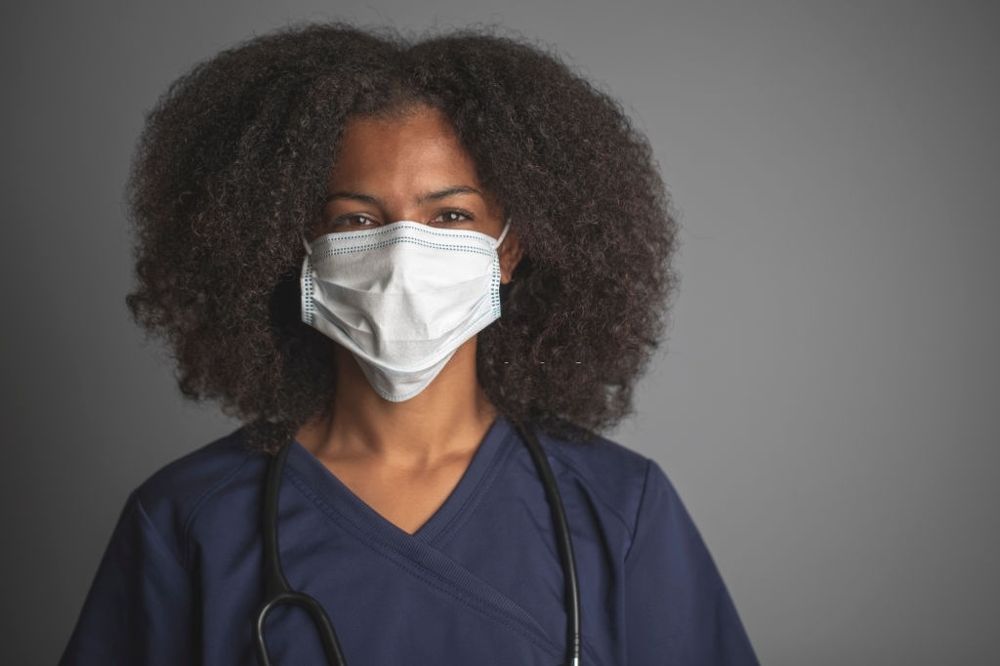
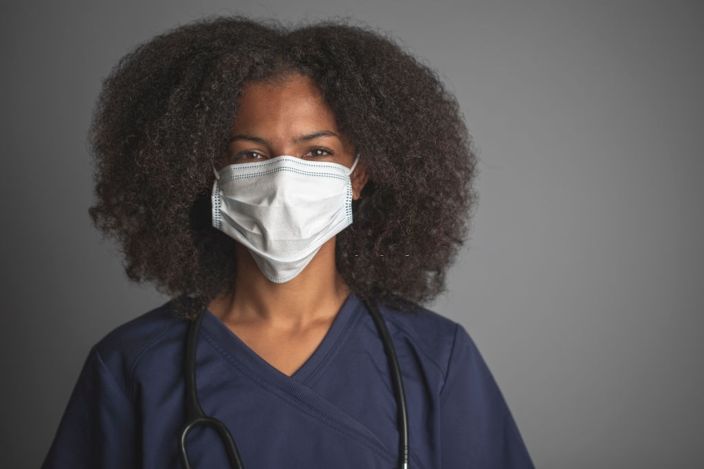

You care for us everyday, Let us care for you!
 

Get access to COVID-19 testing facilities from the comfort of your home. We created this kit to increase testing capacity in our communities and make us all safe.
We are prioritizing tests for frontline health workers
Are you a frontline healthcare worker?
powered by